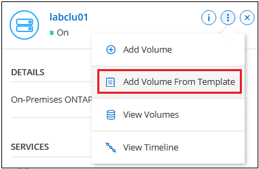
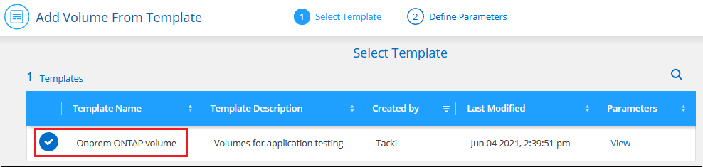
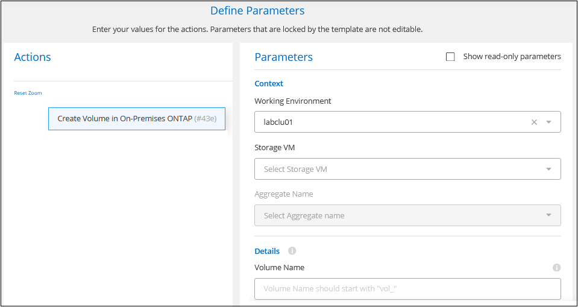

Demander de modifier un document
Demander de modifier un document Modifier sur GitHub
Modifier sur GitHub Guide des contributeurs
Guide des contributeursGestion du stockage pour les clusters ONTAP sur site
Contributeurs
Une fois que vous avez découvert votre cluster ONTAP sur site de BlueXP, vous pouvez ouvrir l’environnement de travail pour provisionner et gérer le stockage.
Création de volumes
BlueXP vous permet de créer des volumes NFS ou CIFS sur des agrégats existants. Vous ne pouvez pas créer de nouveaux agrégats sur un cluster ONTAP sur site depuis BlueXP.
La fonction BlueXP appelée « modèles » vous permet de créer des volumes optimisés pour les besoins de charge de travail de certaines applications, comme les bases de données ou les services de diffusion en continu. Si votre organisation a créé des modèles de volume que vous devez utiliser, suivez la procédure ci-dessous volumes from templates,procédure à suivre.
-
Dans le menu de navigation, sélectionnez stockage > Canvas.
-
Sur la page Canvas, double-cliquez sur le nom du cluster ONTAP sur site sur lequel vous souhaitez provisionner les volumes.
-
Cliquez sur volumes > Ajouter un volume.
-
Suivez les étapes de l’assistant pour créer le volume.
-
Détails, protection et étiquettes : saisissez des détails sur le volume comme son nom et sa taille, choisissez une stratégie Snapshot et spécifiez des balises de volume, si vous le souhaitez.
Certains des champs de cette page sont explicites. La liste suivante décrit les champs pour lesquels vous pourriez avoir besoin de conseils :
Champ Description Taille
La taille maximale que vous pouvez saisir dépend en grande partie de l’activation du provisionnement fin, ce qui vous permet de créer un volume plus grand que le stockage physique actuellement disponible.
Stratégie Snapshot
Une stratégie de copie Snapshot spécifie la fréquence et le nombre de copies Snapshot créées automatiquement. Une copie Snapshot de NetApp est une image système de fichiers instantanée qui n’a aucun impact sur les performances et nécessite un stockage minimal. Vous pouvez choisir la règle par défaut ou aucune. Vous pouvez en choisir aucune pour les données transitoires : par exemple, tempdb pour Microsoft SQL Server.
-
Protocol : Choisissez le protocole du volume (NFS, CIFS ou iSCSI), puis définissez le contrôle d’accès ou les autorisations du volume.
Si vous choisissez CIFS et qu’un serveur n’est pas encore configuré, BlueXP vous invite à configurer un serveur CIFS à l’aide d’Active Directory ou d’un groupe de travail.
La liste suivante décrit les champs pour lesquels vous pourriez avoir besoin de conseils :
Champ Description Contrôle d’accès
Une export policy NFS définit les clients dans le sous-réseau qui peuvent accéder au volume. Par défaut, BlueXP entre une valeur qui donne accès à toutes les instances du sous-réseau.
Autorisations et utilisateurs/groupes
Ces champs vous permettent de contrôler le niveau d’accès à un partage SMB pour les utilisateurs et les groupes (également appelés listes de contrôle d’accès ou listes de contrôle d’accès). Vous pouvez spécifier des utilisateurs ou des groupes Windows locaux ou de domaine, ou des utilisateurs ou des groupes UNIX. Si vous spécifiez un nom d’utilisateur Windows de domaine, vous devez inclure le domaine de l’utilisateur à l’aide du format domaine\nom d’utilisateur.
-
Profil d’utilisation : choisissez d’activer ou de désactiver les fonctionnalités d’efficacité du stockage sur le volume.
ONTAP comprend plusieurs fonctionnalités d’efficacité du stockage qui permettent de réduire la quantité totale de stockage nécessaire. Les fonctionnalités d’efficacité du stockage NetApp offrent les avantages suivants :
- Provisionnement fin
-
Met à la disposition des hôtes ou des utilisateurs une quantité de stockage logique supérieure au stockage effectivement présent dans votre pool physique. L’espace de stockage est alloué de manière dynamique, et non au préalable, à chaque volume lors de l’écriture des données.
- Déduplication
-
Améliore l’efficacité en identifiant les blocs de données identiques et en les remplaçant par des références à un seul bloc partagé. Cette technique réduit les besoins de stockage en éliminant les blocs de données redondants qui résident dans le même volume.
- Compression
-
Réduit la capacité physique requise pour stocker les données en les compressant dans un volume sur un stockage primaire, secondaire ou d’archivage.
-
Revue : consultez les détails du volume, puis cliquez sur Ajouter.
-
Création de volumes à partir de modèles
Si votre entreprise a créé des modèles de volume ONTAP sur site pour permettre de déployer des volumes optimisés pour répondre aux exigences de workloads pour certaines applications, suivez les étapes de cette section.
Le modèle devrait faciliter votre travail car certains paramètres de volume seront déjà définis dans le modèle, tels que le type de disque, la taille, le protocole, la stratégie d’instantané, etc. Lorsqu’un paramètre est déjà prédéfini, il vous suffit de passer au paramètre de volume suivant.

|
Vous pouvez créer des volumes NFS ou CIFS uniquement lors de l’utilisation de modèles. |
-
Sur la page Canevas, cliquez sur le nom du système ONTAP sur lequel vous souhaitez provisionner un volume.
-
Cliquez sur
 > Ajouter un volume à partir du modèle.
> Ajouter un volume à partir du modèle.
-
Dans la page Select Template, sélectionnez le modèle à utiliser pour créer le volume et cliquez sur Next.

La page Define Parameters s’affiche.

Remarque : vous pouvez cliquer sur la case Afficher les paramètres en lecture seule pour afficher tous les champs qui ont été verrouillés par le modèle si vous voulez voir les valeurs de ces paramètres. Par défaut, ces champs prédéfinis sont masqués et seuls les champs à compléter sont affichés.
-
Dans la zone context, l’environnement de travail est rempli avec le nom de l’environnement de travail avec lequel vous avez commencé. Vous devez sélectionner la VM de stockage et agrégat où le volume sera créé.
-
Ajoutez des valeurs pour tous les paramètres qui ne sont pas codés en dur à partir du modèle. Voir volumes,création de volumes Pour en savoir plus sur les paramètres requis pour déployer un volume ONTAP sur site.
-
Cliquez sur Exécuter le modèle après avoir défini tous les paramètres requis pour ce volume.
BlueXP provisionne le volume et affiche une page pour vous permettre de voir la progression.

Ensuite, le nouveau volume est ajouté à l’environnement de travail.
En outre, si une action secondaire est implémentée dans le modèle, par exemple, l’activation de Cloud Backup sur le volume, cette action est également effectuée.
Si vous avez provisionné un partage CIFS, donnez aux utilisateurs ou aux groupes des autorisations sur les fichiers et les dossiers et vérifiez que ces utilisateurs peuvent accéder au partage et créer un fichier.
Réplication des données
Vous pouvez répliquer des données entre les systèmes Cloud Volumes ONTAP et les clusters ONTAP en choisissant une réplication de données unique, qui peut vous aider à déplacer des données vers et depuis le cloud, ou un planning récurrent, qui peut vous aider à la reprise sur incident ou à la conservation à long terme.
Sauvegarde des données
Avec Cloud Backup, vous pouvez sauvegarder les données stockées dans le système ONTAP sur site vers un stockage objet à faible coût dans le cloud. Ce service inclut des fonctionnalités de sauvegarde et de restauration pour la protection et l’archivage à long terme de vos données sur site et dans le cloud.
Scannez, cartographier et classez vos données
Cloud Data Sense peut analyser vos clusters sur site pour mapper et classer les données, et identifier des informations privées. Cela peut réduire les risques liés à la sécurité et à la conformité, diminuer les coûts de stockage et vous aider dans vos projets de migration des données.
Tiering des données dans le cloud
Étendez votre data Center au cloud en effectuant le Tiering automatique des données inactives des clusters ONTAP vers le stockage objet à l’aide de NetApp Cloud Tiering.